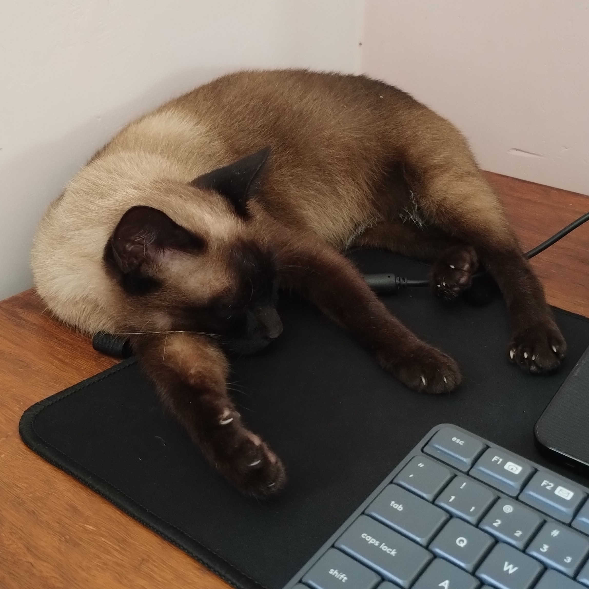
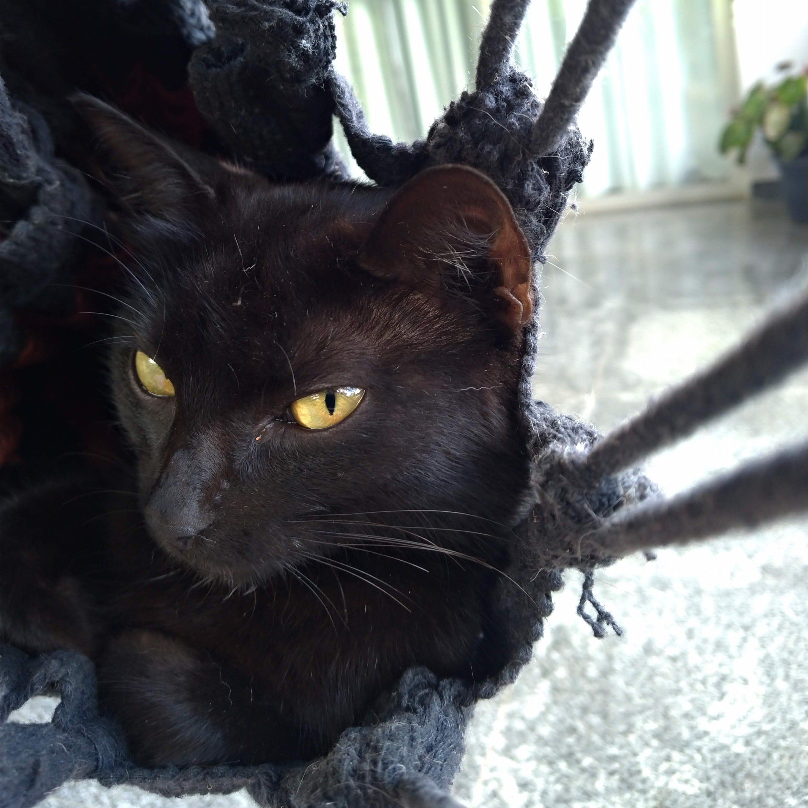
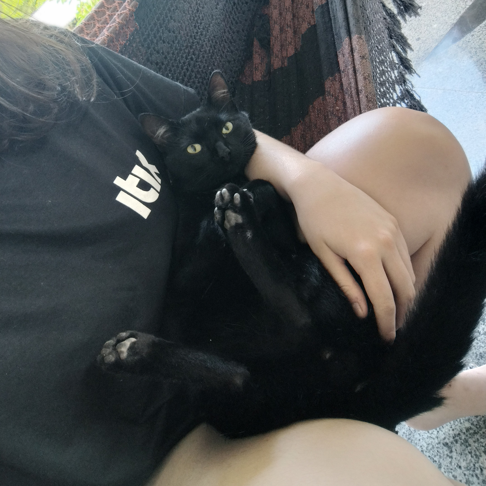

Meus gatinhos
Marilyn, Drácula e Gato(acabou a criatividade)

Marilyn
Marilyn tem 7 anos e foi a minha primeira gatinha, ela gosta de explorar, não gosta muito de brincadeiras e adora a roça!
- A primeira;
- Rabugenta;
- Ama meu pai;
- Gosta de dormir perto de computadores;

Drácula
Drácula tem de 2 à 3 anos e simplesmente apareceu lá em casa (por isso não sei a idade exata), ela é um pouco antissocial e espantada, mas é muito fofinha.
- Espantada;
- Pitica;
- Gosta de dormir no teto da casinha de bambu;

Gato
O Gato é filho da Drácula e é o gatinho mais novo e mais bobo dos 3, gosta de brincar e é muito dengoso.
- Dengoso;
- Bobo;
- Tenta morder quando fazem carinho;